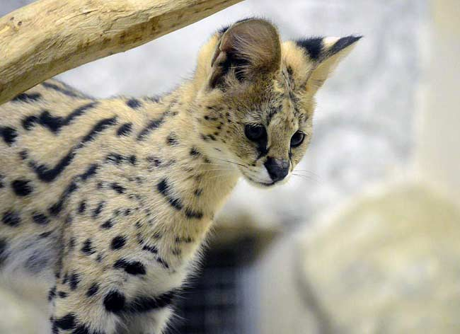

Історія походження породи
Домашній сервал цінний тим, що зовні він виглядає абсолютно як дикий кіт. Так, по суті, він і є диким котом, який вирішив на час пожити в гарному особняку. Батьківщина кішки породи сервал – Африка. На спекотному континенті їх поголів’я, спочатку доволі велике, в останні роки скоротилася за рахунок того, що прекрасне хутро цієї кішки приваблює браконьєрів.
Сьогодні існує 14 видів диких сервалов, які розрізняються забарвленнями вовни. Не так давно заводчики з’ясували, що порода прекрасно одомашнивается (якщо підійти до справи з розумом).
Так з’явилися домашні сервали.
Також вам можливо сподобається стаття про бенгальській кота.
Опис породи сервал
Домашній сервал, як гордий представник “чорного” континенту, дав своїм шанувальникам можливість милуватися своєю африканської грацією і хижим виглядом. Так, він хижак, і весь його зовнішній вигляд створений для того, щоб полювати і нападати. Стандарт породи до кінця ще не розроблений, але окремі особливості зафіксувала сама природа.
-
Голова у кошенят сервалов невелика. А ось вуха, в порівнянні з іншим тілом, великі і високо поставлені, добре опушені зсередини, на зовнішній стороні вони покриті чорними і білими смугами:
- ніс і перенісся широкі;
- очі мигдалеподібної форми знизу і у формі бумеранга по верхньому століттю;
- подушечки під вібриси яскраво виражені, вібриси обов’язкові, вони щільні і довгі.
- Розміри тіла у сервала невеликі. Особливо, якщо порівнювати з іншими дикими кішками Африки. А от у порівнянні зі звичними домашніми кицьками кошенята сервалы — гіганти. Довжина їх тіла може сягати метра.
Хвіст товстий і короткий (25-40 см).
Ці кішки – топ-моделі. Їх кінцівки найдовші серед усіх котячих (в пропорції до тіла), задні ноги довші за передні.
Перераховані відмінності очевидні, але це ще не весь перелік особливостей сервала. Вага «малюків» від 8-ми до 18-ти кг. - Опис вовняного покриву сервала схоже з описом гепарда. Звір покритий ефектними плямами, які зливаються на спині в смуги. На грудях, животі і на морді проглядається біле забарвлення. Фарбування ж самого хутра може бути різноманітною, в лінійці від пісочного до червонувато-бурого.
Сама шерсть коротка, незвичайно ніжна, густа і блискуча.
Характер
Сервалы – це кішки з характером! І щоб цей характер не проявлявся у всіх красі, потрібно максимально коректно не дозволяти тварині показувати ознаки диких предків.
Африканські красені дуже люблять грати і бігати. Дозвольте їм робити і те, і інше.
Так як в природі вони можуть полювати навіть на птахів, стрибаючи до 3-х метрів у висоту, і вдома вони не залишать своїх звичок. Будьте готові до того, що всі висоти у вашій квартирі будуть підкорені безстрашним сервалом. В процесі підкорення можуть постраждати антикварні вази, тендітні статуетки і картини на стінах.
В цілому ж кішки цієї породи дуже доброзичливі і цікаві, вони з задоволенням вивчають і охороняють свою територію. Відгуки про сервалах одностайні в тому, що ці коти – трохи собаки!
Здоров’я
Якщо у вашому опікою виявився кошеня сервал, стежте за тим, щоб зайвий раз він не стрибав з високих поверхонь – в юному віці їх кінцівки дуже крихкі і велика ймовірність травмування ніг.
Слідкуйте за стільцем вихованця. Як визначити, що пора бити тривогу? Якщо більше двох разів трапляється така прикрість як діарея – це сигнал негайно звернутися до ветеринара.
Цих кішок необхідно вакцинувати, як і будь-яких домашніх чотириногих.
ВАЖЛИВО! Вакцина для сервала не повинна містити активних вірусів. Ціна помилки — життя тваринного!
Сервал мітить територію. Іноді до 50 разів на годину! Зрозуміло, цей процес супроводжується вкрай неприємним запахом. Так що кастрація, в даному випадку, необхідність. Кішки піддаються процедурі стерилізації у віці 1 року, а коти — в 7-8 місяців.
Домашній сервал живе довше свого дикого побратима. Тривалість життя домашнього гепарда 15-20 років.